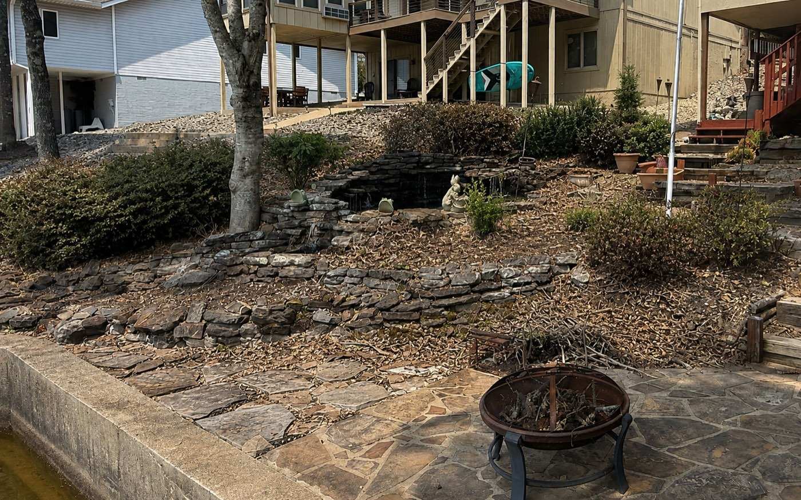
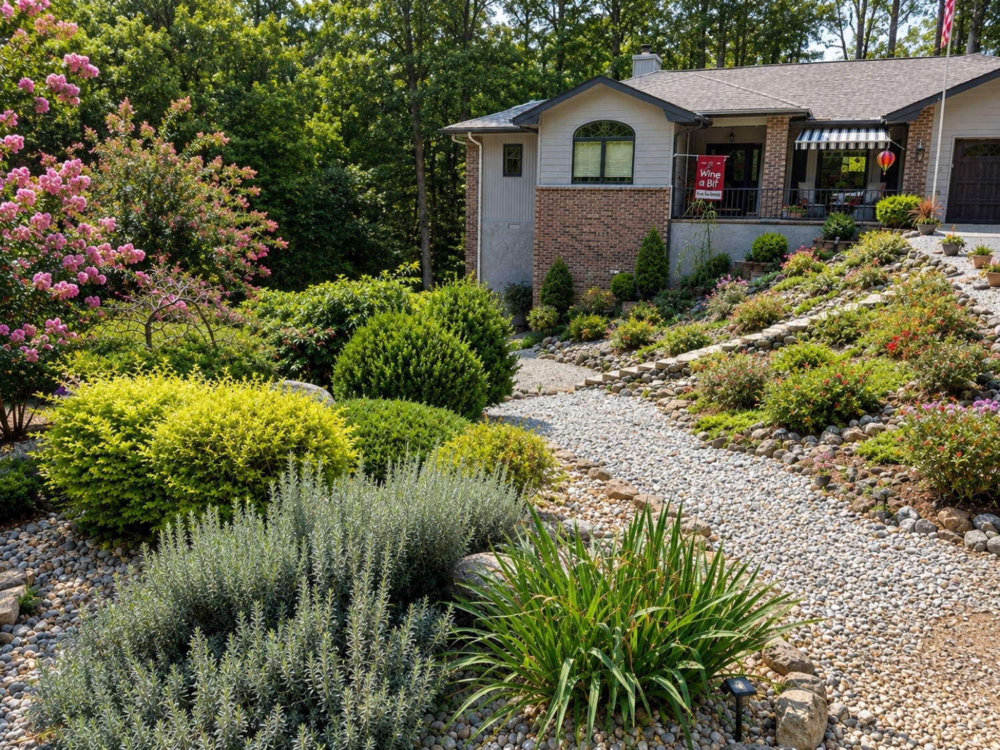
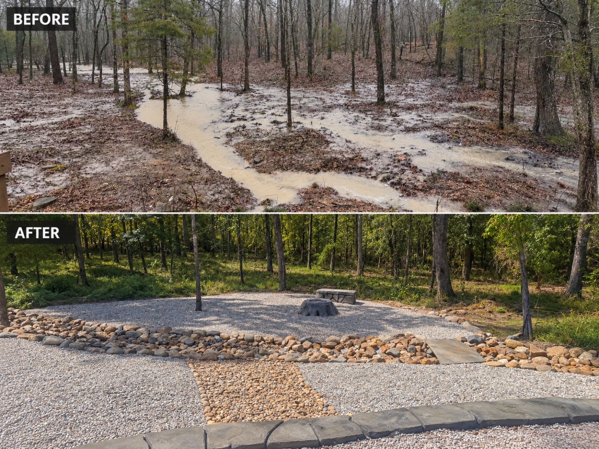
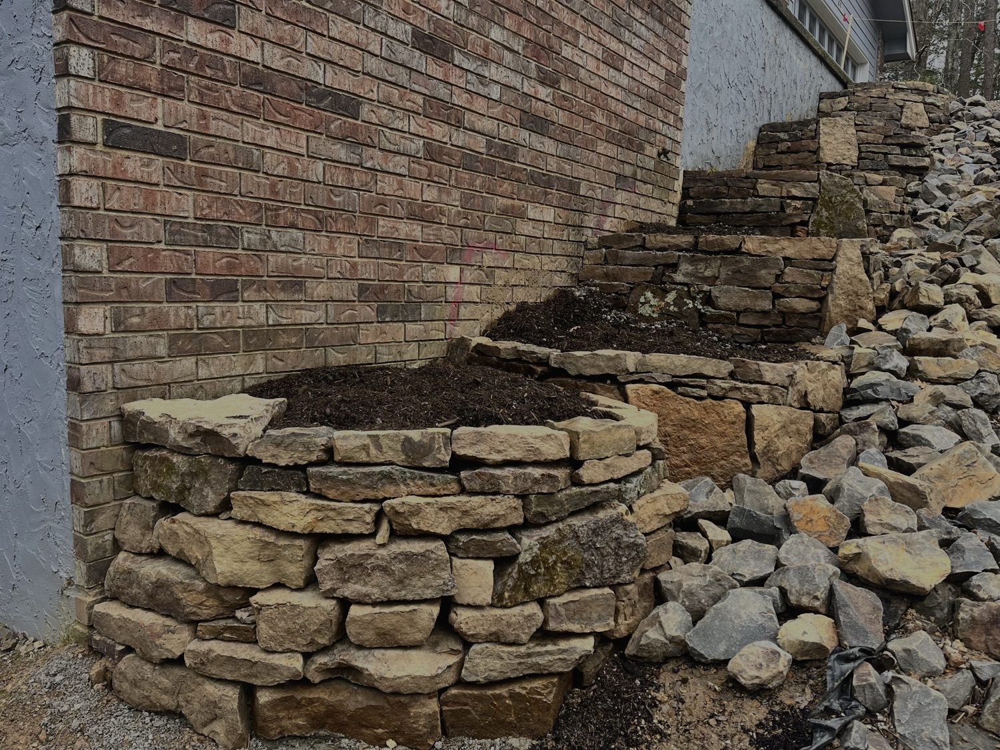
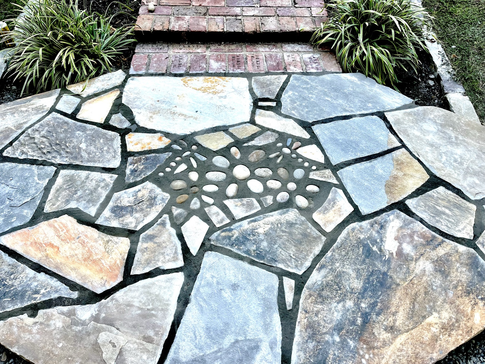

Arkansas Natural Luxury
Ouachita stone, boulders and layered planting that settle into the land and the woods.
Landscape design, build & transformation for Central Arkansas.
We design around your property, its architecture, and how you want to live in it — so the result feels less like landscaping that was installed, and more like it always belonged.
A finished photo shows we can make something beautiful. A before-and-after shows what we were actually able to change.


A difficult backyard, designed around how the family actually wanted to live.


An eroding slope and a drainage problem — turned into the best-looking part of the property.


A steep lakeside grade — rebuilt into stone terraces, a pondless waterfall, and a putting green.


A rocky, washed-out slope — rebuilt into a dry-creek garden of stone, layered plantings and flowering trees.
Our signature is custom-sculpted concrete — boulders, ledges and stone formations shaped and colored by hand for one property, and one property only. It's also how we solve the hardest sites, turning the toughest part of a project into its best.


Poured and carved on site, then hand-colored — natural-looking boulders, walls and features that fit the land instead of looking precast. From a carved tree stump to a full stone terrace, no two are alike.



Flagstone patios, stacked-stone walls, fire features and inlaid stone medallions — every piece set by hand, so the hardscape feels built for the property down to the last joint.

Because your property shouldn't look like everyone else's — we shape the direction around your home and setting.
Ouachita stone, boulders and layered planting that settle into the land and the woods.
Patios, water and stone terraces that connect the home to the view as one space.
Clean lines and restrained planting, designed to look sharp with very little upkeep.
A family-owned Arkansas company with our own sod farm and owner-led crews — resourced to carry a project from first idea to finished space, and to stand behind it after.
Full landscape transformations typically begin around $25,000.
If you're picturing a transformation at that level, let's design it together — from first walk-through to finished space.
Have a more focused project in mind — a patio, a water feature, drainage, or a single improvement?
Tell us what you're considering →Serving Hot Springs, Hot Springs Village & Central Arkansas · 501-627-4384